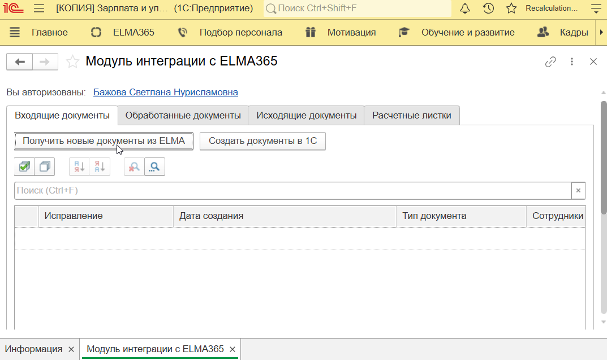
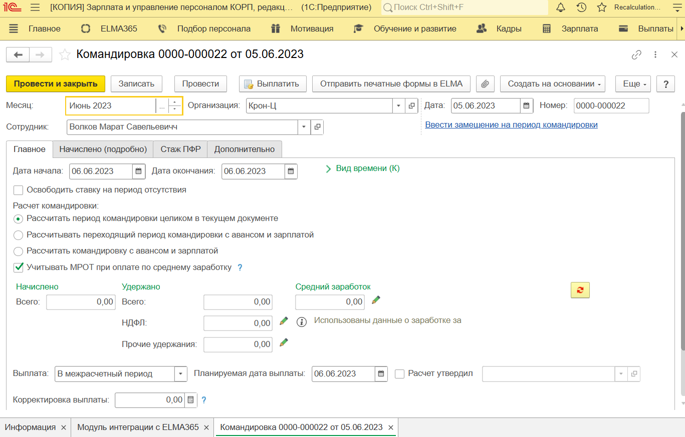
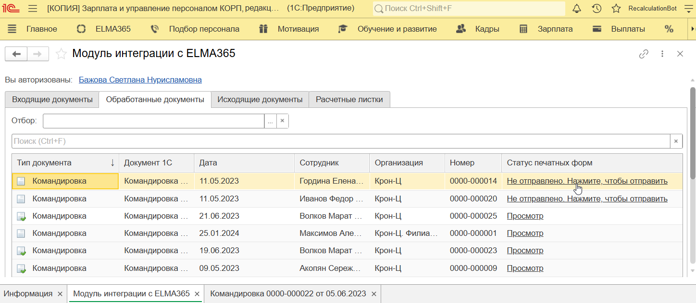
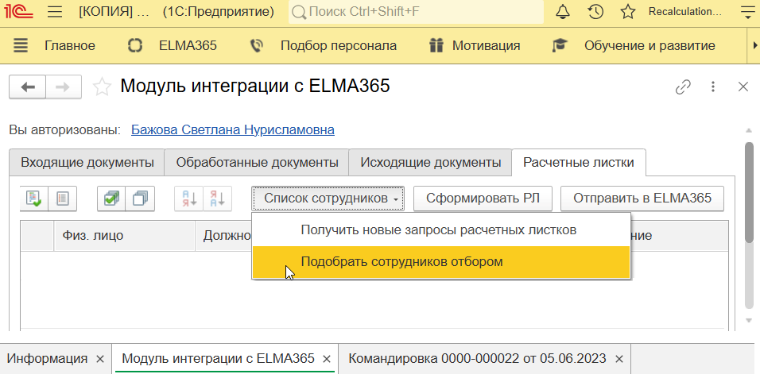
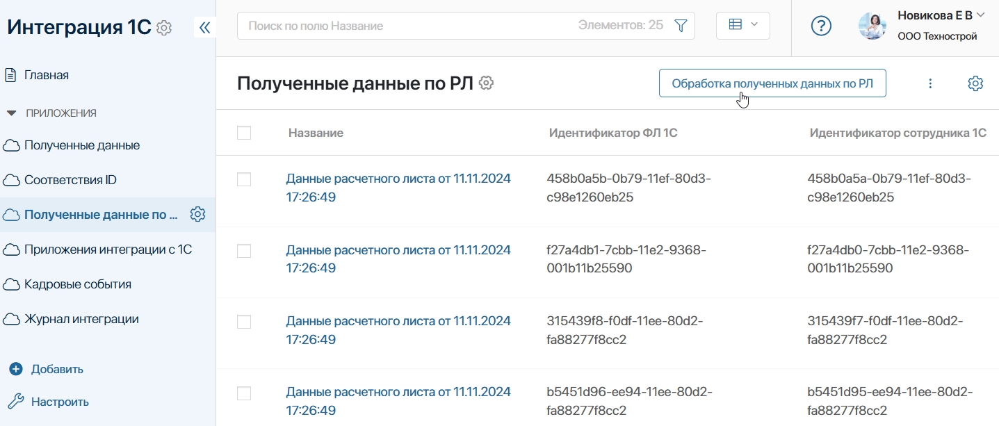
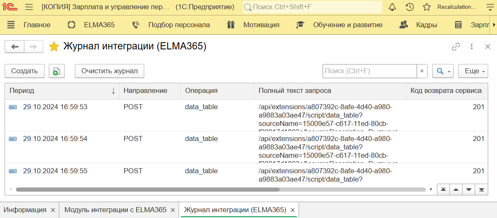

Интеграция с 1С обеспечивает загрузку в ELMA365 справочников и базы сотрудников, а также последующую синхронизацию этих данных.
Кроме того, с помощью специального расширения, установленного в 1С, сотрудники смогут наладить обмен документами между системами и принимать участие в кадровых процессах, настроенных в ELMA365. Бухгалтеры и специалисты отдела кадров смогут:
- загружать в 1С созданные другими сотрудниками заявления и заносить их в базу;
- выполнять необходимые расчёты сумм для выплат сотрудникам;
- формировать печатные формы приказов и отправлять их в ELMA365 для дальнейшего прохождения по маршруту обработки;
- генерировать расчётные листы по выбранным сотрудникам и передавать их в ELMA365.
Работа с разделом «ELMA365» в 1С
Пользователи загружают и обрабатывают кадровые документы в 1С с помощью раздела ELMA365. Он доступен сотрудникам, которые включены в группу с доступом к работе с расширением. Как правило, это сотрудники отдела кадров и бухгалтерии.
Раздел ELMA365 состоит из нескольких вкладок:
- Входящие документы — на вкладке вы можете запустить загрузку заявлений, созданных сотрудниками в ELMA365. Полученные данные будут отображаться в таблице на вкладке;
- Обработанные документы — на вкладке представлены все печатные формы, которые вы создаёте, чтобы обработать поступившие в 1С заявления от других сотрудников;
- Исходящие документы — в текущей версии расширения ELMA365 вкладка не используется;
- Расчетные листки — на вкладке вы можете выбрать сотрудников организации, сформировать для них расчётные листы и отправить их в ELMA365, чтобы выслать на ознакомление.
Рассмотрим подробнее действия, которые нужно совершить в 1С для обработки кадровых документов.
Загрузить в 1С заявления и сформировать их печатные формы
Формировать печатные формы в 1С можно для заявлений на отпуск, командировку и увольнение.
Процесс выполняется следующим образом:
- Сотрудник создаёт заявление с портала КЭДО и отправляет его на согласование руководителю.
- После того как заявление согласовано, специалист отдела кадров в ELMA365 получает задачу подготовки данных в учётной системе. Тогда специалист отдела кадров или бухгалтер организации может перейти в 1С и обработать созданное заявление.
Далее рассмотрим действия, выполняемые в 1С.
- Откройте раздел ELMA365 и выберите пункт Модуль интеграции с ELMA365.
- На вкладке Входящие документы нажмите кнопку Получить новые документы из ELMA.

При этом в ELMA365 для новых заявлений создаются элементы в разделе Интеграция 1С в справочнике Приложения интеграции. Эти данные являются служебными и необходимы для выполнения корректного обмена между системами. Пользователи с ними не работают.
По окончании загрузки в 1С на вкладке Входящие документы отобразятся новые заявления от сотрудников.
- Чтобы сгенерировать печатную форму по заявлению, выберите запись на вкладке Входящие документы и нажмите Создать документы в 1С. Откроется форма редактирования документа, его черновик сохранится на вкладке Обработанные документы.
- В черновике документа отображается информация, внесённая сотрудником при создании заявления. Вам необходимо рассчитать сумму выплат по заявлению и заполнить пустые поля в приказе.

Если администратор в настройках расширения включил опцию автоматического расчёта, поля с начислениями в сформированном документе могут быть заполнены. Проверьте данную информацию.
- Чтобы сохранить внесённые данные в черновике документа, нажмите кнопку Записать. Тогда информация обновится, и вы сможете вернуться к документу позже.
- Сформируйте печатную форму по заявлению. Для этого нажмите одну из кнопок на верхней панели: Провести или Провести и закрыть. Во втором случае вы выйдете из режима редактирования документа.
- Затем загрузите печатную форму в ELMA365. Для этого на форме редактирования документа нажмите Отправить печатные формы в ELMA. В открывшемся окне отметьте документ для отправки и подтвердите действие.
Отправить печатную форму можно также с вкладки Обработанные документы, нажав ссылку в столбце со статусом документа.

После этого печатные формы загружаются в ELMA365. В элементе заявления обновляются данные, и руководителю ставится задача подписания печатной формы. Далее продолжается настроенный в ELMA365 процесс обработки заявления.
Создать расчётные листы и направить их в ELMA365
В 1С можно сформировать расчётные листы для выбранных сотрудников и загрузить их в ELMA365 для последующей отправки на ознакомление. Для этого:
- В разделе ELMA365 > Модуль интеграции с ELMA365 откройте вкладку Расчетные листки.
- Чтобы указать пользователей, для которых нужно подготовить расчётные листы, нажмите Список сотрудников и выберите:

- Получить новые запросы расчетных листков — в список отобранных пользователей добавляются все сотрудники организации;
- Подобрать сотрудников отбором — в появившемся окне укажите период, за который нужно выдать расчётные листы, а затем вручную отметьте сотрудников.
- На вкладке Расчетные листки отобразится список добавленных сотрудников. Отметьте флажком нужные записи или выберите всех сотрудников. Затем нажмите Сформировать РЛ.
- Документы генерируются и добавляются в таблицу сотрудников в столбец Состояние. Для загрузки расчётных листов в систему нажмите кнопку Отправить в ELMA365.
- Документы передаются в ELMA365 и в разделе Интеграция 1С > Полученные данные по РЛ создаются служебные элементы с информацией в формате .json.
- Чтобы преобразовать полученные данные, в ELMA365 запускается процесс их обработки. Это можно сделать двумя способами:
- вручную — в разделе Интеграция 1С > Полученные данные по РЛ нажмите кнопку Обработка полученных данных по РЛ;

- автоматически — администратор в ходе первичной настройки интеграции может установить запуск процесса по расписанию.
В результате процесса в разделе КЭДО 3.0 > Расчетные листы создаются элементы из полученных из 1С данных. Эти документы отправляются на ознакомление сотрудникам в Портал КЭДО.
Посмотреть журнал интеграции
В ходе обмена данными между 1С и ELMA365 можно сохранять результаты выгрузки в специальном журнале интеграции. С его помощью пользователи смогут отслеживать объекты, которые передаются в ELMA365, просматривать статусы запущенных выгрузок и выявлять возникшие ошибки.
Журнал интеграции доступен пользователям, включённым в группы администраторов на стороне ELMA365 и 1С.
Чтобы ознакомиться с журналом, выполните следующие действия:
- в 1С откройте раздел ELMA365 и выберите пункт Журнал интеграции (ELMA365).

Обратите внимание, в журнале отображаются записи, если в настройках расширения ELMA365 включена опция сохранения данных обмена;
- в ELMA365 результаты обмена записываются в разделе Интеграция 1С > Журнал интеграции. Активировать сохранения данных можно в настройках модуля КЭДО365: Интеграция с 1С.